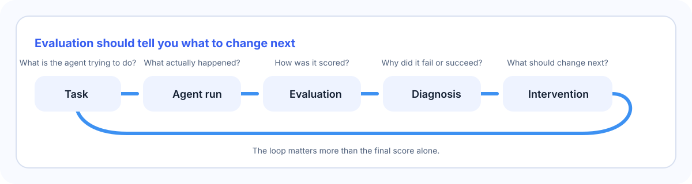
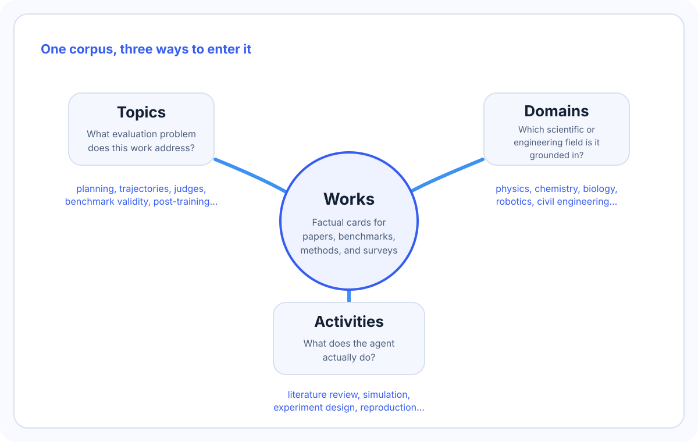

Select any topic, domain, activity, monthly report, or work card to render it here as HTML.
What this repository is for
A benchmark score is useful only if it helps you decide what to change next. This repository collects work that makes evaluation more diagnostic, more legible, and more useful for building scientific and engineering agents.


How to read the corpus
Three ways into the same work card
Maintenance flow
How the repository stays current
The repository updates in two rhythms: every three days for new works, and every month for synthesis.
Recent synthesis
Recent monthly reports
Evaluation questions
Topics
Topics group work by the evaluation problem it addresses.
Scientific and engineering fields
Domains
Domain pages answer where a benchmark or method is grounded.
What the agent does
Activities
Activities group work by the actual scientific or research task under evaluation.
Research stories over time
Monthly reports
Monthly reports summarize what entered the knowledge base and what that cluster of work changed in the field.
First-appearance timeline
Each bar counts works by earliest public appearance month.
Card-level lookup
Works
Search by title or summary, then narrow by topic, domain, activity, or month.